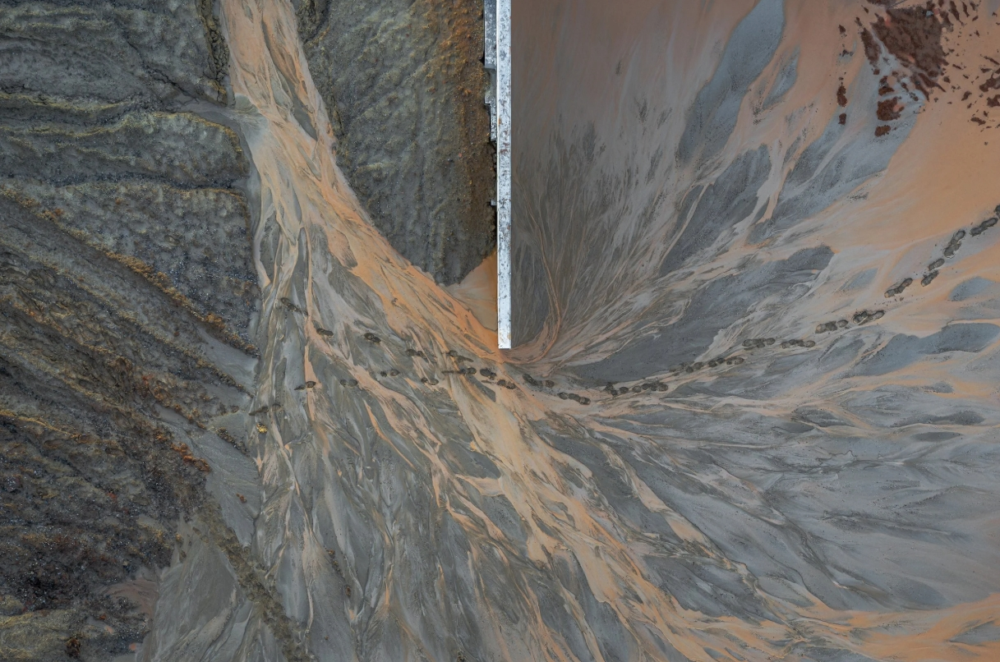
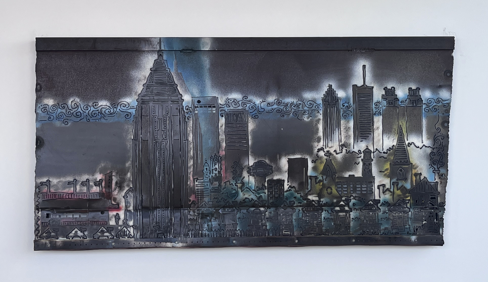

BCG Atlanta Office Art Guide
Hand Speak by Neka King
2023, Acrylic on drywall
30'x18'
Piedmont Commons, 37th Floor
Atlanta-based artist Neka King worked with the Art Committee to come up with a mural that reflected the ideas and values of the culture of BCG. Her concept incorporated variations of hand gestures expressing a wide range of emotions. The use of hands while talking speaks to global forms of communication through the lenses of hand gestures.
Flow by Neka King
2023, Acrylic on drywall
196 square feet
Coffee Bar, 38th Floor
Atlanta-based artist Neka King worked with the Art Committee to come up with a mural that reflected the ideas and values of the culture of BCG.This mural is about the Atlanta community at large. She pulled from memories of being on the beltline on a Saturday afternoon. ”It is a moment where many different people (from all walks of life) take up space together. Whether they are enjoying nature, hanging out with friends, or just engaging in self-care, we all congregate to experience joy.”
Gather by Neka King
2023, Acrylic on drywall
196 square feet
Second Coffee Bar, 38th Floor
Atlanta-based artist Neka King worked with the Art Committee to come up with a mural that reflected the ideas and values of the culture of BCG. This mural is about connecting with others and building together. “From the bottom center scene we have two people engaging in a conversation, the most building block to creating community. As you move up the scene goes to a group of people from different backgrounds and experiences working together.This Image is front and center to express BCG’s core goal. Surrounding these two scenes are depictions of nature and rhythmic patterns to bring in an added sense of liveliness. The hands in each top corner surrounding a radiating circle are a metaphor for planting the seeds of community.”

OTDN-7600 by Eric Mack
2021, UV screen, xerox copy,
handmade paper, raintree
leaves, powdered pigment,
fine glitter, ground peat free
moss, white glitter, latex paint,
tissue packing paper
56"x49"
Outside Client Conference Room, 37th Floor
Eric Mack's
artwork explores the long standing relationship between our architectural living spaces and the natural world.
Since the dawn of civilization, plant life within our constructed spaces has enhanced our human experience.
In 600 B.C., The Hanging Gardens of Babylon represented a romantic, mythical ideal of nature within the design
alongside the Babylonian palace. Recently, our changing global habitat has led us to rethink the footprint that
architectural development may leave on our natural environment. Residents, scientists, botanists, and architects
have become inspired to create sustainable forms of architecture, working towards the long-term healing of
our planet.
We must erect buildings that minimize the environmental impact. Eco-friendly materials, energy-efficient technology
and a deliberate awareness of our surroundings that aim to conserve the biodiversity of the area, considerations
previously unthought-of are vital to the survival of our planet.
Mack was inspired to create this body of work after witnessing the splendor of The Park Royal Hotel Pickering in
Singapore and The Yin & Yang House in Germany. The innovative concepts and their masterful execution of the locations
is captivating. Those striking observations from a lover of design in all its forms – art, nature, gardening, and
plant life, is the driving force for the incorporation of natural elements into my work.
As a mixed media artist, Mack has implored the use of a variety of materials such as architectural blueprints,
mineral derived pigments, recycled packing paper, natural dyes, synthetic ultraviolet shade screens, handmade
papers, seeds sourced from my home garden, peat free soil, and natural fibers. This combination of materials
represents an abstracted vision of a world that could become commonplace in our near future. New ways to live
with our planet are pertinent to ensure the safety and health of future generations. He thinks of the world
that his daughter will inherit, and is motivated to do all that is possible to leave it better than he found it.
Cyclists by Amanda Joy Brown
2022, Acrylic on canvas
36"x36"
Outside Workroom, 37th Floor
Amanda Joy Brown understands that to be in the world is to be surrounded by complex pattern, rhythm, and color. The experience can be simultaneously intriguing and overwhelming. Brown’s work reacts to this dynamic, dealing with primarily crowd settings. Her technique and compositions parallel a collective and individual humanity, as the flow of paint both defines and generalizes individual figures and expressions. She creates both controlled and accidental line work by letting the paint flow from the end of a stick or her hands, then pour, glaze, and finger paint, mostly without the use of a brush. Each work is approached as both a drawing and a painting.
Farmer's Market by Amanda Joy Brown
2022, Acrylic on canvas
36"x36"
Outside Workroom, 37th Floor
Musicians by Amanda Joy Brown
2022, Acrylic on canvas
36"x36"
Outside Workroom, 37th Floor
Choir by Amanda Joy Brown
2022, Acrylic on canvas
36"x36"
Outside Workroom, 37th Floor
Glitch Venus by Melissa Huang
2023, Resin
96 Pieces, 5"
Piedmont Commons Living Room, 37th Floor
Melissa Huang's glitch-inspired art studies the desire, failure, and dissonance of portraying an idealized self for a physical and digital audience. Adopting a perfect girl persona has never been easier; however, the bodily and emotional roles that society expects women to fulfill have never been further out of reach.
A different version of the self exists in the minds of our family, friends, colleagues, strangers, and digital audience; none of which fully encapsulates one’s complete identity. Rather, each of these fragments come together to paint a fuller picture of “you.” We form our identities through the Sartrean act of looking at others, being looked at, and understanding that we are the subject of “the look.”
Contemporary culture is obsessed with perfection, and digital image manipulation has blurred the lines between reality and the idealized self, creating an unsettling gap between who we really are and how we wish to be perceived.
In recent work, Huang considers how those of us coming of age with the internet and social media have constructed alternative identities online—fantasies, really—that bear little resemblance to the person IRL. Ultimately, she uses this series of works to dismantle the complicated archetypes to which women must conform in our ever changing cyber landscape.
Incidental Work: 1a by Christopher Derek Bruno
2023, Acrylic on panel
36"x36"x4"
Outside Elevators, 38th Floor
For the past twelve years, Christopher Derek Bruno has explored the nature of perception and the cognitive visual experience. His work investigates what occurs between a source of visual stimuli and the mind : how sensory input becomes spatial awareness. At its core, this work is motivated by the idea that visual perception holds clues to larger truths about human consciousness and experience. This work often engages the liminal spaces – those in-between moments, places, and events that define how we navigate the built environment. Drawn to the thresholds where perception becomes fluid, his work invites viewer’s into an active relationship with each piece, rewarding time, movement, and intention. Incidental works 1A-B + 2A-B are a set of complementary objects developed in unison. A singular composition of prismatic bends captured by pigment resting upon translucent + opaque planes. The evidence of light captured + fixed in place alongside the viewer as one passes through a space. who's coming / going : heading in / out : on-the-way up / down. The present will forever be a moment, impartial to one's origin + direction; you are here, now.

Incidental Work: 1b by Christopher Derek Bruno
2023, Acrylic on panel
36"x72"x4"
Outside Elevators, 38th Floor
Incidental Work: 2a by Christopher Derek Bruno
2023, Acrylic on panel, UV printed acrylic
36"x36"x4"
Outside Elevators, 37th Floor
Incidental Work: 2b by Christopher Derek Bruno
2023, Acrylic on panel, UV printed acrylic
36"x72"x4"
Outside Elevators, 37th Floor
Construction Site, Tucker, GA by Peter Essick
2019, Photography
36"x24"
Outside MLK, 37th Floor
Peter Essick is a photographer, teacher, and editor with 30 years of experience
working with National Geographic Magazine. He specializes in nature and environmental
themes. Named one of the forty most influential nature photographers in the world
by Outdoor Photography Magazine UK, Essick has been influenced by many noted American
landscape photographers from Carleton Watkins to Robert Adams. His goal is to make
photographs that move beyond documentation to reveal in careful compositions the human
impact of development as well as the enduring power of the land.
Essick is the author
of four books of his photographs, The Ansel Adams Wilderness, Our Beautiful,
Fragile World, Fernbank Forest and Work in Progress. He has photographed stories
for National Geographic on many environmental issues including climate change,
high-tech trash, nuclear waste and freshwater. After 30 years travelling the world
as an editorial photographer, Essick decided to focus his work on a more personal
documentation of the environmental and cultural changes in his hometown of Atlanta.
Essick's photographs are in the permanent collection of the Museum of Contemporary Art
of Georgia, the Booth Western Art Museum and many other private collections. He is
represented by Spalding Nix Gallery in Atlanta, Georgia
Smokerise by Peter Essick
2018, Photography
36"x24"
Outside MLK, 37th Floor

Pop Art Renderings of Atlanta Buildings, Untitled Series by Chas Underwood
2010, Print
Four Pieces, 36"x23.5"
Playroom, 37th Floor
Chas Underwood is a digital fine art photographer who creates limited edition prints, corporate branded fine art, as well as photo-montage murals. Recent clients include Sweet Georgia's Juke Joint, CARE (2010 calendar), Marriott, Ritz Carlton, CCBCC, The Boston Consulting Group, Cox Media Group, Cox Enterprises, Cox Automotive, Atlanta Falcons, and Arthur Blank Foundation.
Untitled Series by Chas Underwood
2010, Photography
Two Pieces, 35"x35" Framed
Wellness Room Hallway, 38th Floor
Untitled Cityscape by Lana Garner
1995, Metal Sculpture
59"x35.5"
NW Corner, 38th Floor
This piece was commissioned in 1995 for the original BCG Atlanta Office at 600 Peachtree. Lana Garner is a professional artist with a degree in architecture from Louisiana State University, and has sold art to over 400 galleries. Since facing some health issues, she has become a Doctor of Oriental Medicine, Licensed Massage Therapist, Certified Thermography Technician, Reiki Practitioner, and Cranial Sacral Practitioner. She currently lives in her home town in South Carolina.

Untitled by Robert Bubp
Year, Metal Wall-Mounted Sculpture
Two Pieces, 35"x50.5"
Piedmont Lounge, 38th Floor
Robert Bubp is an interdisciplinary artist using in situ,
performative research to search for and document experiences and situations via direct recording, collected ephemera,
and mapping specific presences and movements. His work incorporates painting, drawing, video, installation, and on
occasion crosses into social practice.
Bubp's work has been shown in over 60 exhibitions, including Harvester Arts
in Wichita, Kansas, the Salina Art Center in Salina, KS., the Kouvola Art Museum in Kouvola, Finland, the Indianapolis
Art Center, the CICA Museum in Gimpo-si, South Korea, the Spartanburg Art Museum in Spartanburg, S.C., and a permanent
exhibition at the University of Kansas-Edwards Campus in Overland Park, Ks. Bubp’s work has appeared in local and national
publications including the Atlanta Journal-Constitution, ArtPapers, and Art in America. He has participated in several
artists’ residencies, including Arquetopia in Puebla, Mexico in 2015, at Wayfarers Studios in Brooklyn, N.Y., in 2018,
and was a visiting artist at the University of Nebraska-Lincoln in 2016 and at Massey University in Wellington, New Zealand
in 2019.
He has won numerous grants and university awards, including a Master Artist Fellowship from the Kansas Arts
Commission in 2005, the WSU College of Fine Arts Excellence in Teaching Award in 2005 and again in 2015, the WSU College
of Fine Arts Award for Fine Arts Special Endeavor for initiation and development of the downtown student gallery, WSU
Shift Space, in 2006. In 2010, Bubp was honored with the university-wide Award for Creative Activity for recognition of
an ambitious creative agenda including creative projects on campus and in the regional community. He completed an MFA
in Drawing, Painting, & Printmaking at Georgia State University in 2002, and a BFA at the University of Georgia in 1993.
He is currently Professor of Art at Wichita State University, in Wichita, KS.